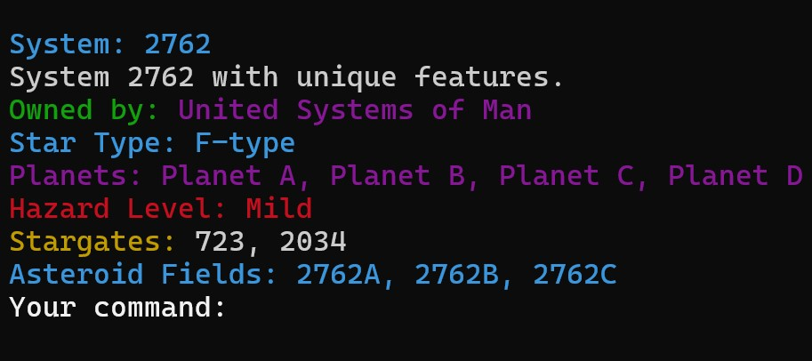
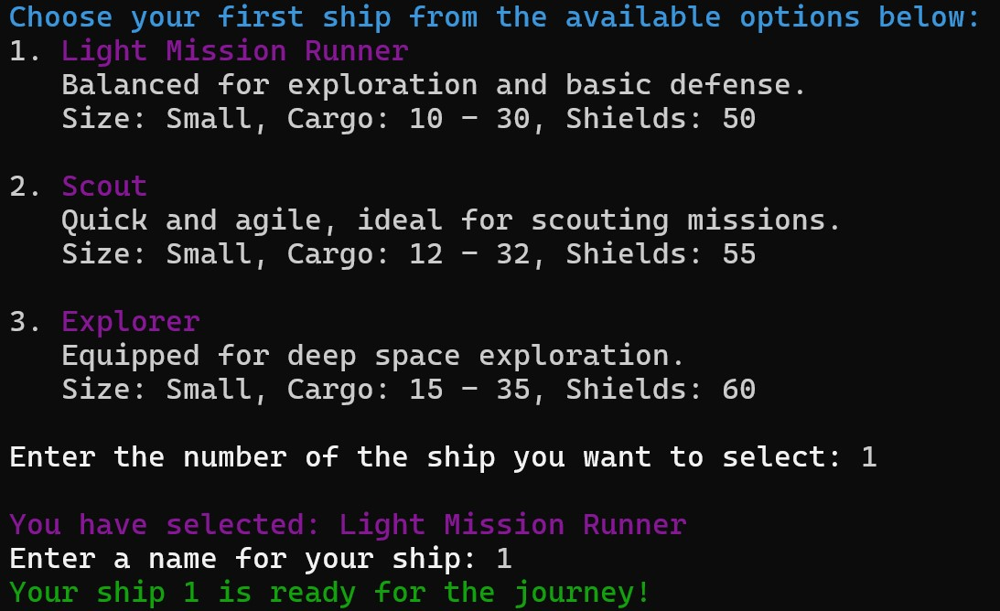
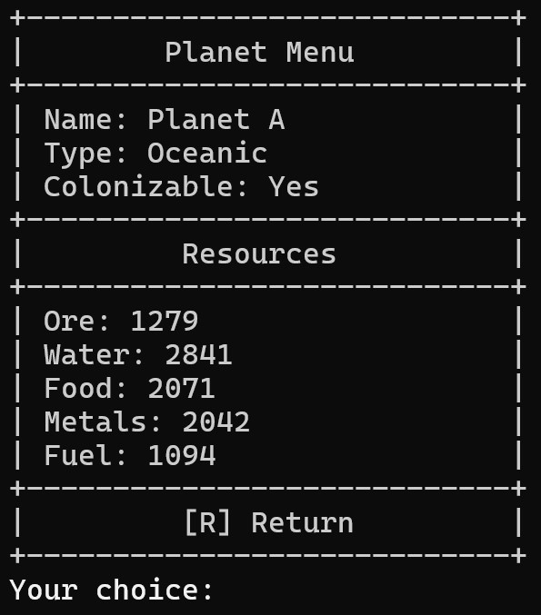
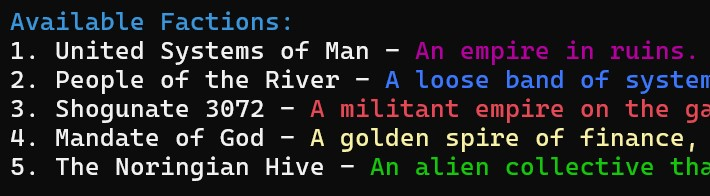

RetroStellar is a retro-style 4x space trading game inspired by classics like TradeWars 2002 and EVE Online.
This game arose out of an idea to take advantage of modern-day GPT agents in combination with my own continuing studies in software development.
The goal was to quickly stand up a functioning, text-based game in the vein of TradeWars 2002 that was built under a modern codebase and with the assistance of modern GPT agents. TradeWars 2002 originated what EVE Online has evolved. I'm taking the approach of pulling the two together in a text-based UI. TradeWars 2002 and EVE Online are some of my favorite game styles and I tried to bring it to life for you here. Enjoy.
Gameplay Overview
🪐 Explore the Galaxy
Travel through thousands of procedurally generated star systems. The roguelite approach gives each session a chance to discover mysteries, from asteroid belts rich with resources to planets ripe for colonization or exploitation.
🚀 Command Your Fleet
Choose from a variety of ships, upgrade your fleet, and engage in tactical combat. Customize your ships with advanced tech to dominate enemies and protect your assets.
💰 Trade and Prosper
Establish trade routes between star systems, mine resources, and engage with NPC traders. Build alliances, increase your reputation, and control the galaxy's economy.
⚔️ Conquer New Frontiers
Join one of five factions vying for control of the galaxy. Participate in large-scale battles and strategic missions to claim new territories and advance your faction's influence.
Get Involved with RetroStellar
Want to follow the development or contribute to RetroStellar? Check out the GitHub repository and join the project!
Visit the GitHub Repo